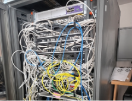
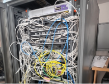

Field Interventions
Intervention 1: Antivirus Replacement at Edena
I participated in replacing antivirus software on 7 company tablets, switching from Eset to Watchguard. We resolved an IP address issue by releasing DHCP addresses.
Intervention 2: Switch Replacement at Exco Cogefi
I replaced old Cisco switches with new models across multiple floors, ensuring proper cabling to prevent network disruptions.
 
